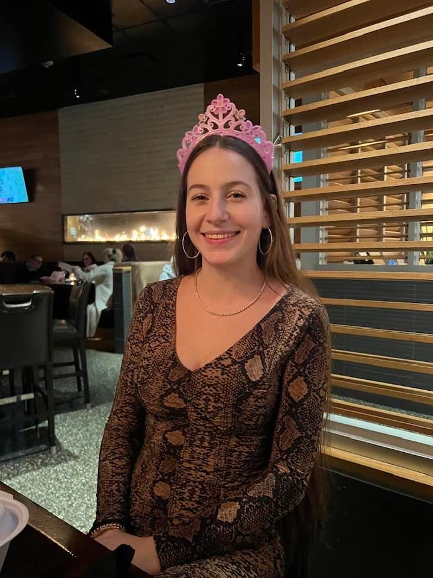
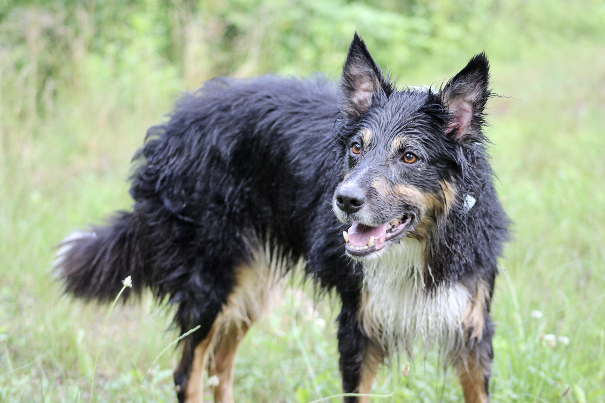
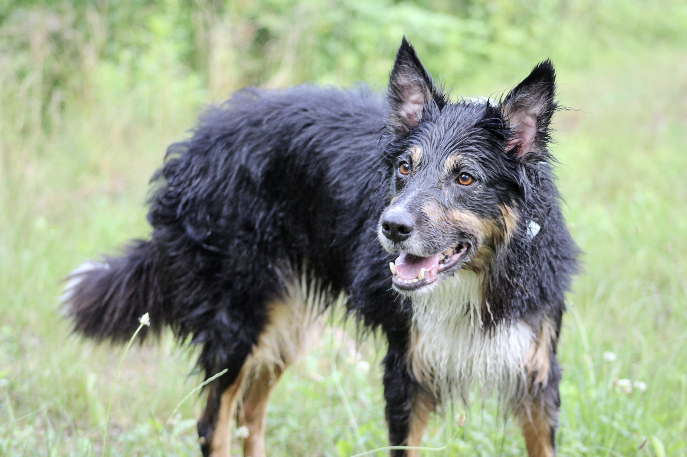

I was born and raised in Harrisburg, Pennsylvania. I've always been an artist, from photography, to drawing, to digital art, and more. I started designing logos, flyers, and character portraits, and eventually started exploring web-design. My goal is to incorporate all of my art into business by being able to design websites, using my own work for photography, logos, and digital art.

 
